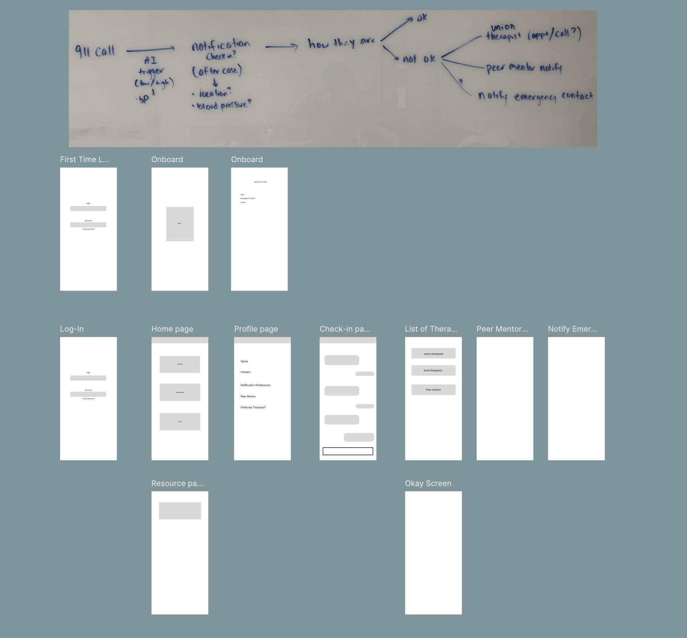
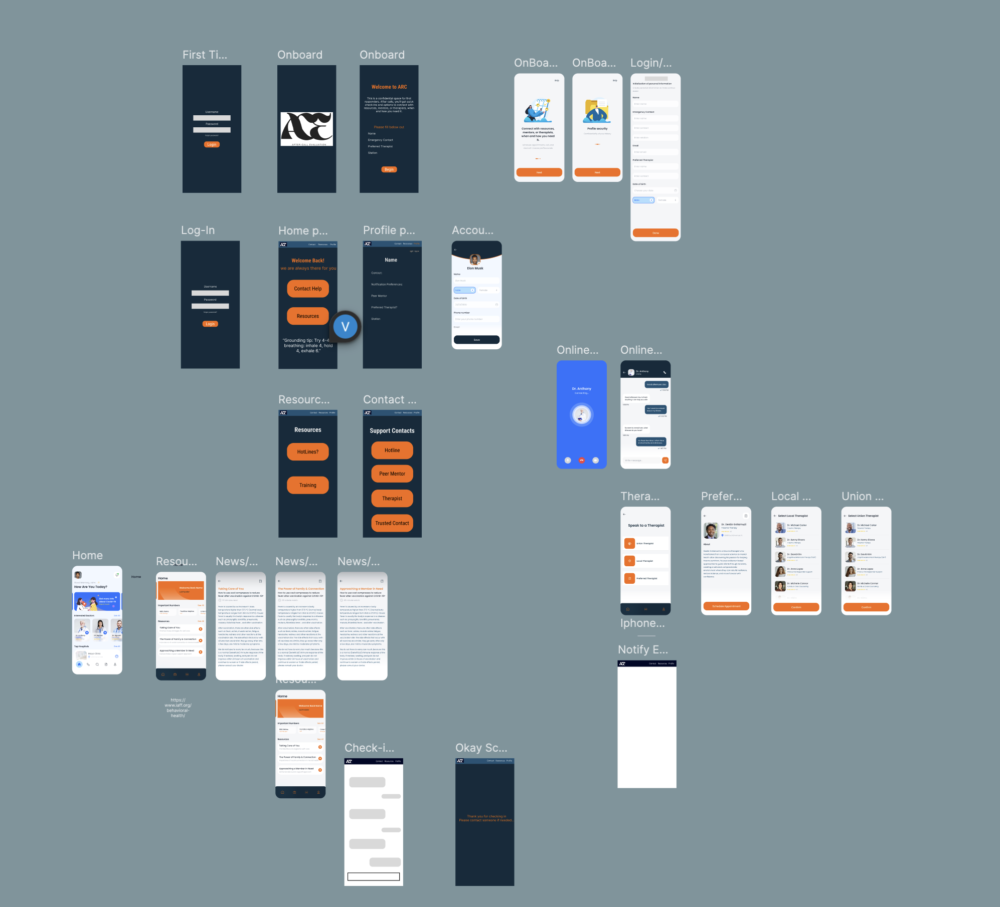

ShellHacks 2025 · 72-Hour Hackathon
ARC
ARC, short for Action, Resources, Care, is a confidential mobile support platform designed to help first responders process high-intensity calls, access trusted resources, and lower the barrier to care.
Research-Led
Grounded in first-responder interviews and barrier analysis around stigma, trust, and resource access.
Process-Focused
Shows the full path from problem framing and flows to wireframes, UI, and coded prototype.
Built Fast, Built Thoughtfully
Created in a 72-hour hackathon while still centering care, clarity, and usability.
Overview
What ARC is
ARC was designed as a confidential mobile support experience for first responders after difficult calls. The project focused on one key challenge: support resources may exist, but many people do not use them when they actually need them.
Rather than treating mental health care as something users seek only once a crisis escalates, ARC reframes support as something immediate, private, and integrated into the post-call moment. The product combines quick check-ins, therapist and mentor pathways, and educational resources into one guided mobile flow.
The Problem
Why we chose this topic
The inspiration for ARC came from conversations with firefighters in our own extended team network. We discussed how emotionally difficult calls can stay with first responders long after the shift ends, while existing support systems often go unused because they feel stigmatized, fragmented, or difficult to access.
ARC was not just about building a wellness app. It was about designing an experience that respected privacy, urgency, emotional context, and trust.
- Support exists, but is not always used in the moment it is needed
- Users may avoid direct outreach because it feels vulnerable or high-pressure
- After difficult calls, users need low-friction guidance, not more complexity
- Any solution has to feel private, calm, and emotionally safe
Research
How we validated the need
We used survey and interview input from first responders to understand how they currently experience mental health resources, what prevents usage, and what would make support feel more approachable.
61%
Knew about existing resources, but were not actively using them.
40%
Identified stigma or fear of judgment as a major barrier.
78%
Rated an app like this as useful at 3/5 or higher.
Sample interview questions
- Do you currently use the support resources available in your department?
- What makes it harder to ask for help after a difficult call?
- Would you feel more comfortable using an app before speaking to someone directly?
- What kind of features would make a support tool feel more useful or realistic to use?
What we learned
- Awareness was not the problem — comfort and trust were
- Users preferred private, self-initiated support pathways
- Speed mattered: support had to be available in a few taps
- Resources needed to feel curated, not overwhelming
Process
How we moved from problem to product
Once the problem was defined, we structured the project around a UX process that could fit the 72-hour timeline while still showing intentional design thinking.
- Day 1: topic framing, user research synthesis, and interview review
- Day 2: user flows, low-fidelity wireframes, and interface direction in Figma
- Day 3: high-fidelity UI, component refinement, and front-end implementation
Even under hackathon constraints, we wanted the work to reflect a real process: research, information architecture, visual design, and implementation.
User Flow
Designing the support pathway
The core user flow focused on what happens after a difficult call, when a responder may need support but may not feel ready to directly reach out.
- Log in and land on a calm, action-oriented dashboard
- Receive or initiate a post-call check-in
- Indicate how you are feeling through a simplified prompt
- Choose next steps: therapist, mentor, trusted contact, or resources
- Take action through call, text, scheduling, or educational support
This structure intentionally reduced friction between recognizing distress and accessing help. Instead of overwhelming users with too many options, the flow guided them into support.
Design
From wireframes to interface
Low-Fidelity Wireframes
Early wireframes focused on simplifying the decision-making process and reducing friction between emotional recognition and support.
- Minimal steps from “after call” → support
- Clear primary actions to reduce hesitation
- Large touch targets for fast interaction
- Reduced text to avoid cognitive overload


High-Fidelity UI
High-fidelity designs emphasized calmness, trust, and clarity through color, spacing, and visual hierarchy aligned with first responder environments.
- Navy + orange palette for trust and urgency
- Clear visual hierarchy for quick scanning
- Consistent spacing and component patterns
- Accessible contrast and readable typography
Components
System thinking under a short timeline
To keep the experience consistent while building quickly, I thought about the UI as a component system. Repeated patterns such as action buttons, resource cards, therapist lists, onboarding modules, and article layouts were designed to feel cohesive across the app.
- Reusable action buttons for immediate next-step support
- Resource cards that made content feel actionable and scannable
- Therapist list patterns that emphasized selection and clarity
- Profile and onboarding modules designed for simple completion
Design Decisions
Why the interface works the way it does
Simple Check-In Buttons
We used simplified emotional check-ins to reduce hesitation and make it easier to engage quickly.
Immediate Support Actions
Buttons for call, text, and scheduling reduce the gap between intent and action.
Calm Visual Tone
Color, spacing, and hierarchy were chosen to communicate trust without feeling sterile or clinical.
Private-Feeling Navigation
The flows were designed to feel guided and personal rather than exposing users to too many options at once.
Resource Accessibility
Educational content was framed as usable support, not just informational content buried in the app.
Trust Cues
Clear language, simple structure, and minimal friction were all used to increase emotional safety.
Prototype + Build
Translating design into code
Once the interface direction was established, I worked on translating those designs into a functional mobile prototype. The challenge was not just building screens — it was keeping the experience aligned with the original UX intentions.
Frontend
React Native and TypeScript for a mobile-first interface and component-based screen system.
Backend
Flask API and MongoDB to support profile data, resource content, and application structure.
Auth
Auth0 for secure login and protected account access.
AI Prototype
Explored transcript analysis and guided support logic to detect high-intensity calls and prompt next steps.
- Implemented key mobile screens from Figma into React Native
- Built flows for onboarding, resource reading, contact selection, and profile setup
- Used code structure to preserve spacing, hierarchy, and interaction clarity from the original design
- Balanced rapid prototyping with usability and visual consistency
Outcome
What ARC demonstrated
ARC demonstrated how UX research, interface design, and front-end development can come together around a real, emotionally sensitive problem space. Even as a hackathon project, it showed strong product thinking and a clear care-centered experience.
- Translated interview insights into meaningful interaction decisions
- Created a cohesive mobile experience under a short timeline
- Balanced emotional sensitivity with usable, action-oriented flows
- Built a prototype that felt credible, supportive, and intentional
Takeaways
What I learned
ARC reinforced that good UX in sensitive spaces depends on more than functionality. Trust, pacing, language, and emotional context are all part of the interaction design.
- How to design for emotionally high-stakes situations
- How to connect research findings to specific interface decisions
- How to build quickly without losing process clarity
- How to translate care-centered design into usable front-end implementation